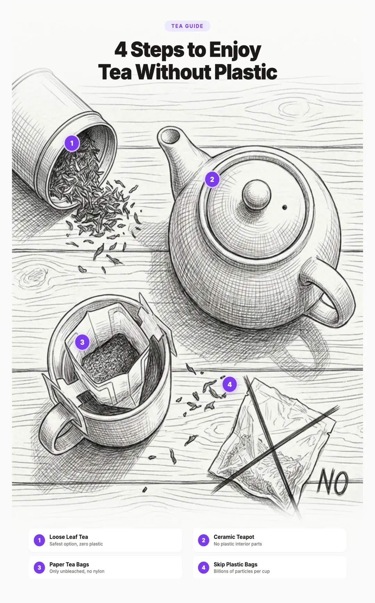

How to Avoid Microplastics in Tea: The Complete Guide to Safer Brewing (2026)
If you drink tea from plastic tea bags, you may be swallowing billions of microscopic plastic particles with every cup. That is not an exaggeration. A landmark 2019 study from McGill University found that a single plastic tea bag steeped at brewing temperature released approximately 11.6 billion microplastic particles and 3.1 billion nanoplastic particles into the water. That is thousands of times higher than the microplastic levels found in other foods and beverages.
The good news? Switching to safer tea is one of the easiest plastic reduction swaps you can make. Whether you go with loose leaf tea and a stainless steel infuser or simply choose brands that use genuinely plastic free paper bags, you can eliminate this massive source of microplastic exposure almost overnight.

This guide covers everything you need to know: which tea bags contain plastic, which brands are safe, how to set up a plastic free brewing routine, and how to test your own tea bags at home.
1. The Shocking Research: Billions of Particles Per Cup
In 2019, researchers at McGill University in Montreal conducted what became the most widely cited study on microplastics in tea. They tested four commercial teas sold in plastic tea bags (nylon and PET), removing the tea leaves and steeping the empty bags in water heated to 95°C, which is the standard brewing temperature for most teas.
The results were staggering. A single plastic tea bag released approximately 11.6 billion microplastic particles and 3.1 billion nanoplastic particles into the cup. To put that in perspective, that is several orders of magnitude higher than the microplastic contamination found in other foods, beverages, and even tap water.
The researchers also tested the effects of these particles on water fleas (Daphnia magna), a standard organism used in toxicology. The fleas exposed to the microplastic contaminated water showed anatomical abnormalities and behavioral changes, suggesting biological effects at these concentration levels.
Subsequent studies have confirmed and expanded on these findings. A 2021 study published in Food Chemistry found similar particle counts from nylon tea bags and also detected the release of toxic additives including phthalates and bisphenol A (BPA) that leach from the plastic into hot water. The combination of physical particles and chemical leaching makes plastic tea bags a double threat.
2. Which Tea Bags Contain Plastic?
Not all tea bags are created equal. The material your tea bag is made from determines whether you are drinking billions of plastic particles or none at all. Here is a breakdown of the most common tea bag materials:
Nylon Tea Bags
Nylon (polyamide) is one of the most common materials used in premium pyramid and "silken" tea bags. Despite their elegant appearance, these bags are pure plastic. They are used because nylon is transparent, holds its shape well, and allows water to flow through easily. But at brewing temperatures, nylon releases massive quantities of micro and nanoplastic particles.
PET (Polyethylene Terephthalate) Tea Bags
PET is the same plastic used in water bottles. Some manufacturers use PET mesh for pyramid bags as a lower cost alternative to nylon. Like nylon, PET degrades when exposed to hot water, releasing billions of plastic particles. PET can also leach antimony, a toxic metalloid used as a catalyst during PET production.
Polypropylene Heat Sealed Paper Bags
This is the most deceptive category. Many paper tea bags look and feel like plain paper, but they contain a thin layer of polypropylene (PP) plastic that is used to heat seal the edges shut. This polypropylene is invisible to the eye but releases microplastic particles into your tea, especially at high temperatures. Most major supermarket brands use this method.
Genuine Paper Tea Bags (No Plastic)
Some brands use unbleached paper bags that are sealed with a fold, staple, or plant based adhesive instead of polypropylene heat sealing. These are the only conventional tea bags that are truly plastic free. They may also use abaca (Manila hemp) fiber or other plant based filter materials.
3. Brand Breakdown: Safe vs. Unsafe
Here is a breakdown of popular tea brands and whether their tea bags contain plastic. Keep in mind that brands can change their packaging at any time, so always check the latest packaging claims.
| Brand | Plastic Free? | Notes |
|---|---|---|
| Traditional Medicinals | Yes | Unbleached paper bags, no plastic sealant, staple closure |
| Pukka Herbs | Yes | Plant based, compostable bags sewn with organic cotton |
| Clipper Tea | Yes | Unbleached, non heat sealed paper bags |
| Numi Organic Tea | Yes | Plant based filter paper, plastic free packaging |
| Rishi Tea | Yes (loose leaf) | Primarily loose leaf; sachets use plant based material |
| Yorkshire Tea | Yes (since 2020) | Switched to fully plant based, plastic free bags |
| PG Tips | Yes (since 2021) | Switched to plant based biodegradable bags |
| Lipton (standard bags) | Varies | Some ranges plastic free, but pyramid bags are nylon |
| Twinings | Varies | Standard bags may contain PP; pyramid bags are plastic |
| Tazo | No | Silken pyramid bags made from nylon or PET |
| Bigelow | No | Many varieties use plastic sealed bags and plastic overwrap |
| Mighty Leaf | No | Silken pouches made from PET plastic mesh |
4. Loose Leaf Tea: The Safest Option
The simplest way to eliminate microplastics from your tea is to skip tea bags entirely and switch to loose leaf. Loose leaf tea brewed with a stainless steel, glass, or ceramic infuser means zero plastic contact from start to finish.
Beyond safety, loose leaf tea is also a significant upgrade in quality. Most tea bags contain what the industry calls "fannings" or "dust," which are the broken fragments and powder left over after whole leaf processing. Loose leaf tea uses whole or large cut leaves that release more complex flavors and aromas during steeping.
How to Brew Loose Leaf Tea
- Measure your tea. Use approximately one teaspoon (2 to 3 grams) of loose leaf tea per 8 ounce cup. Adjust to taste.
- Heat your water. Different teas require different temperatures. Black tea: 200 to 212°F. Green tea: 160 to 180°F. White tea: 160 to 185°F. Oolong: 185 to 205°F. Herbal: 212°F (full boil).
- Place tea in your infuser. Use a stainless steel basket infuser, a glass teapot with a built in glass or steel filter, or a ceramic teapot with an infuser.
- Steep for the right time. Black tea: 3 to 5 minutes. Green tea: 2 to 3 minutes. White tea: 4 to 5 minutes. Oolong: 3 to 5 minutes. Herbal: 5 to 7 minutes.
- Remove the infuser. Do not over steep, as it makes tea bitter. Many loose leaf teas can be re steeped 2 to 3 times.
Recommended Loose Leaf Teas
- Rishi Tea Organic Loose Leaf Varieties offer excellent quality across black, green, and oolong teas, all packaged in recyclable tins.
- Vahdam Assorted Loose Leaf Tea Sampler offers 10 varieties including green, black, herbal, and chai, all vacuum sealed for freshness in recyclable packaging.
5. Safe Tea Accessories
The right accessories make loose leaf tea just as convenient as tea bags, with none of the plastic exposure. Here are the key items for a plastic free tea setup.
Stainless Steel Tea Infusers
A good stainless steel mesh infuser is the foundation of plastic free tea brewing. Look for infusers made from food grade 18/8 stainless steel with a fine mesh that keeps small tea particles out of your cup. Basket style infusers are better than ball style because they give the leaves more room to expand, which improves flavor extraction.
- Forlife Stainless Steel Tea Infuser is a large basket infuser that fits most mugs and teapots. The fine mesh handles even small leaf teas without leaking particles. All stainless steel construction with no plastic parts.
- Stainless Steel Tea Strainer with Drip Tray provides an extra fine mesh and a drip tray for clean countertops. Made entirely from food grade stainless steel.
Glass Teapots
Glass teapots let you watch the leaves unfurl and the color develop, which is especially beautiful with blooming teas and green teas. Borosilicate glass is the best material: it is heat resistant, non reactive, and releases zero particles into your tea.
- Hario Chacha Kyusu Glass Teapot is a beautifully designed borosilicate glass teapot with a stainless steel mesh filter built in. Made in Japan, with no plastic parts that contact tea.
- CUSINIUM Glass Teapot with Infuser features a borosilicate glass body and a stainless steel infuser basket. The lid is also glass with a stainless steel rim.
Ceramic Teapots
Ceramic teapots are another excellent option. They retain heat well, are completely inert, and have been used safely for centuries. Look for teapots made from stoneware or porcelain with food safe glazes. Avoid teapots with plastic handles or lids that could contact steam or hot water.
Glass Tea Cups and Mugs
Complete your plastic free setup with glass or ceramic mugs. Double walled borosilicate glass mugs keep your tea hot without burning your hands, and they look beautiful on the table.
- Double Walled Borosilicate Glass Tea Cups are insulated for comfortable handling and made entirely from glass with no plastic or silicone.
6. Water Quality Matters Too
Even if your tea setup is completely plastic free, the water you use can be a source of microplastics. Tap water and bottled water both contain measurable levels of microplastic particles. A 2018 study by Orb Media found microplastics in 93% of bottled water samples tested worldwide, with an average of 325 particles per liter.
Using filtered water for your tea improves both safety and taste. A high quality water filter removes microplastics along with chlorine, heavy metals, and other contaminants that can affect the flavor of your tea.
A few quick tips for tea water:
- Filter your water with an activated carbon block or reverse osmosis system before boiling.
- Use fresh water each time. Do not reboil water that has been sitting in the kettle, as it concentrates minerals and any contaminants present.
- Avoid plastic water pitchers. Use glass or stainless steel pitchers to store filtered water.
7. Kettles: Avoid Plastic Interiors
Your kettle is another potential source of microplastic exposure. Many electric kettles have plastic water chambers, plastic lids, or plastic water level indicators that come into contact with boiling water. Every time you boil water in a plastic chamber, microplastic particles can leach into the water before it even reaches your tea.
The safest options are all stainless steel kettles (interior and lid), glass kettles with stainless steel elements, or traditional stovetop kettles made from stainless steel. For a deeper dive into plastic free hot beverage preparation, see our complete guide to plastic free coffee, which covers kettle selection in detail.
8. Herbal and Specialty Teas
Herbal teas, including chamomile, peppermint, rooibos, ginger, and hibiscus, follow the same rules as traditional teas when it comes to microplastics. The plastic is in the bag, not in the tea itself. This means that any herbal tea brewed from loose ingredients or in a genuinely plastic free paper bag is safe.
However, herbal teas deserve special attention for a few reasons:
- They require boiling water. Unlike green or white tea, most herbal teas are brewed with water at a full boil (212°F / 100°C). Higher temperatures increase microplastic release from plastic bags.
- They require longer steeping times. Herbal teas typically steep for 5 to 10 minutes, sometimes longer. Extended contact time at high temperature compounds the problem.
- They are often consumed for health benefits. Many people drink herbal teas specifically for therapeutic purposes: chamomile for sleep, ginger for digestion, peppermint for nausea. Consuming billions of plastic particles alongside these herbs undermines the entire purpose.
Best Plastic Free Herbal Tea Options
- Traditional Medicinals uses unbleached paper bags for all of their herbal varieties, including their popular Throat Coat, Chamomile, and Ginger teas.
- Pukka Herbs offers a wide range of herbal blends in plant based, compostable bags.
- Loose dried herbs from bulk suppliers are the most economical and safest option. Brew them in a stainless steel infuser just like tea leaves. Chamomile flowers, dried peppermint, ginger root slices, and hibiscus petals are all widely available in bulk.
9. How to Check If Your Tea Bags Contain Plastic
If you have tea bags at home and you are not sure whether they contain plastic, there are several simple tests you can perform.
The Burn Test
This is the most reliable home test. Empty a dry, unused tea bag and hold a match or lighter to the bag material:
- Pure paper: Burns completely to ash. Smells like burning paper or wood. Leaves light, crumbly gray ash.
- Plastic containing: Melts, curls, or shrinks. May form a hard bead. Produces a chemical or acrid smell. The residue is hard and shiny rather than crumbly ash.
The Tear Test
Try tearing the tea bag material:
- Pure paper: Tears easily with a clean, fibrous edge.
- Plastic containing: Harder to tear. May stretch slightly before ripping. The torn edge may look smoother or more uniform than torn paper.
The Water Test
Place an empty tea bag in a glass of room temperature water:
- Pure paper: Absorbs water readily and begins to soften and lose shape.
- Plastic containing: Maintains its shape and rigidity. Nylon and PET bags will hold their structure almost indefinitely in water.
The Texture Test
Feel the tea bag between your fingers:
- Pure paper: Feels like paper. Slightly rough texture. Flexible.
- Nylon or PET mesh: Feels silky smooth, almost slippery. Holds its shape when squeezed.
- PP sealed paper: Feels like paper overall, but the edges (where the seal is) may feel slightly different, smoother or shinier than the rest of the bag.
10. Environmental Impact of Plastic Tea Bags
The microplastic issue is not just about what goes into your body. It is also about what goes into the environment. Billions of tea bags are thrown away every year, and those containing plastic do not fully decompose.
- Landfill persistence: A nylon or PET tea bag can take hundreds of years to break down. During that time, it slowly fragments into smaller and smaller microplastic particles that leach into soil and groundwater.
- Composting contamination: Many people compost their used tea bags, assuming they are organic material. But if the bags contain polypropylene, nylon, or PET, they are adding plastic to their compost, which then spreads microplastics into garden soil and eventually into food grown in that soil.
- Scale of the problem: The United Kingdom alone consumes an estimated 60 billion cups of tea per year. Even if only a fraction of those cups involve plastic tea bags, the cumulative microplastic contribution is enormous.
- Marine impact: Microplastics from tea bags that enter waterways through landfill leachate or wastewater contribute to the broader ocean microplastics crisis, where marine organisms ingest particles throughout the food chain.
Choosing plastic free tea bags or loose leaf tea is one of the simplest daily changes you can make that benefits both your health and the environment. For more on reducing plastic throughout your kitchen, see our guide to plastic free cookware and our getting started guide.
11. Your Complete Plastic Free Tea Setup
Here is everything you need to enjoy tea without any plastic exposure, from water to cup.
The Essential Shopping List
| Item | Recommended Product | Why It Matters |
|---|---|---|
| Tea Infuser | Forlife Stainless Steel Infuser | Fine mesh, large basket, no plastic parts |
| Glass Teapot | Hario Chacha Kyusu | Borosilicate glass, built in steel filter |
| Glass Teapot (Alt) | CUSINIUM Glass Teapot | Glass body, steel infuser, glass lid |
| Tea Strainer | Stainless Steel Strainer | Extra fine mesh with drip tray |
| Glass Cups | Double Walled Glass Cups | Insulated, comfortable to hold, all glass |
| Loose Leaf Tea | Rishi Tea Organic | High quality loose leaf in metal tins |
| Herbal Tea Bags | Traditional Medicinals | Plastic free paper bags, organic herbs |
12. Frequently Asked Questions
Many tea bags contain plastic. Pyramid shaped and silken tea bags are typically made from nylon or PET plastic. Even standard paper tea bags often use polypropylene to heat seal the edges. A 2019 McGill University study found that a single plastic tea bag releases approximately 11.6 billion microplastic particles and 3.1 billion nanoplastic particles into a single cup of tea.
Several brands offer genuinely plastic free tea bags. Traditional Medicinals uses unbleached paper bags with no plastic sealant. Pukka Herbs uses plant based, compostable bags. Clipper Tea uses unbleached, non heat sealed paper bags. Numi Organic Tea uses plant based filter paper. Always check packaging for claims like "plastic free" or "compostable" to verify.
Yes. Loose leaf tea brewed with a stainless steel infuser or glass teapot eliminates plastic contact entirely. It is the safest way to drink tea from a microplastic perspective. Loose leaf tea also tends to be higher quality, since tea bags often contain broken leaves and dust grade tea known as fannings.
The simplest test is the burn test. Open a dry, unused tea bag and hold a flame to the material. Pure paper will burn completely to ash with a wood or paper smell. If the material melts, curls into a hard bead, or produces a chemical smell, it contains plastic. You can also try tearing the bag: plastic containing bags are harder to tear and may stretch slightly before ripping.
Yes. The McGill University study found that microplastic release increased significantly at higher brewing temperatures. At 95 degrees Celsius, which is standard tea brewing temperature, nylon and PET tea bags released billions of particles. Lower temperatures reduced but did not eliminate the release. The safest approach is to avoid plastic tea bags entirely rather than trying to brew at lower temperatures.
No. Silken pyramid tea bags are typically made from nylon or PET plastic, despite their premium appearance. These are among the worst offenders for microplastic release because they are designed to be steeped in near boiling water. The word "silken" is a marketing term. The material is plastic. Switch to loose leaf tea or verified plastic free paper tea bags instead.
Related Articles
- The Complete Guide to Plastic Free Coffee
From beans to brewers, how to enjoy coffee without microplastic contamination. - How to Remove Microplastics from Drinking Water
Learn which water filters actually remove microplastics and which ones fall short. - Best Plastic Free Food Storage Containers
Glass, stainless steel, and silicone containers compared for safety and durability. - How to Avoid BPA and Phthalates in Everyday Products
A room by room guide to reducing harmful chemical exposure at home.